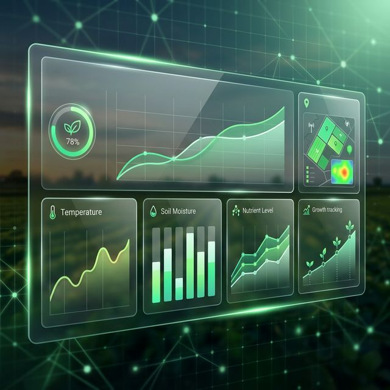
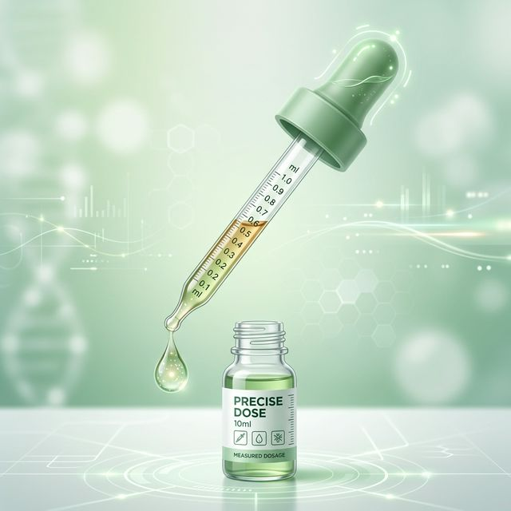
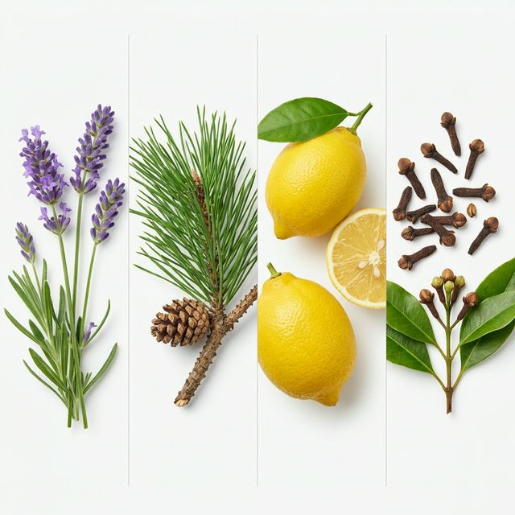

RDC 1.015/2026: CBD em Farmácias e Manipulação Magistral
O novo marco que permite a personalização de doses de CBD e amplia o acesso através de drogarias nacionais.
Informação de autoridade para pacientes, médicos e profissionais do ecossistema da Cannabis medicinal.

O novo marco que permite a personalização de doses de CBD e amplia o acesso através de drogarias nacionais.

Entenda como o novo ambiente experimental da ANVISA permitirá o cultivo e produção por associações de pacientes.

Manual técnico sobre manejo edafoclimático, controle de VPD e protocolos de pós-colheita para garantir a qualidade farmacêutica da colheita.

Como os compostos aromáticos influenciam a biodisponibilidade e o efeito de entorno.
Entenda como os receptores CB1 e CB2 regulam o equilíbrio do seu corpo.
Acelere sua jornada de saúde com nossos guias práticos e ferramentas de monitoramento técnico.

Cronograma automatizado, monitoramento diário e protocolos de adubação avançada.

Manual técnico para titulação lenta e segura de fitofármacos baseado no seu perfil.

Entenda o aroma como indicador clínico e aprenda a escolher as genéticas para seus sintomas.